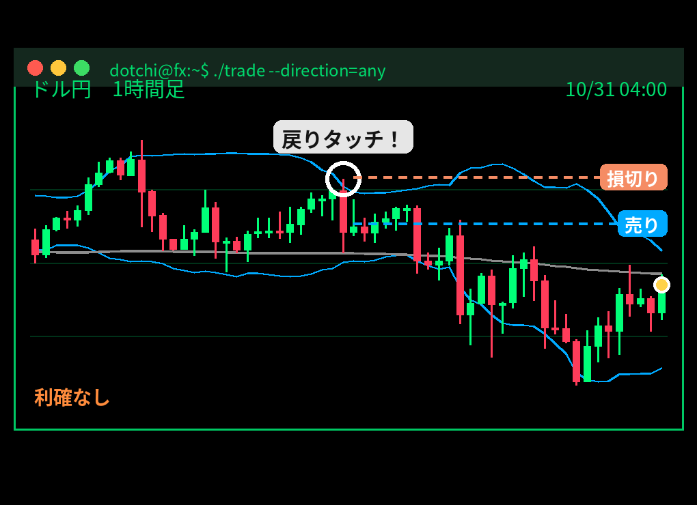

【ドッチー】ドル円 売り → 週末決済 +3,450円（2026/10/29）

「深夜23時。データを取る時間」
ドッチー（担当：押し目・上下どちらでも）が、10月29日 23時ごろにドル円を売り。結果は週末決済・+3,450円（1万通貨の目安）でした。
今回のトレード
| 通貨 | ドル円 |
|---|---|
| 方向 | 売り |
| エントリー | 10/29 23:07 157.875円 |
| 最初の損切り | 158.138円 |
| 利確 | なし（追いかけ） |
| 決済 | 10/31 05:00ごろ 157.528円（週末決済） |
| 保有時間 | 約30時間 |
| 成績 | +1.31R（リスク1回分を1とした成績） |
| 損益の目安 | +3,450円（1万通貨） |
なぜ入った？ 戦法「向きを見ない押し目」
押し目のルールから「200本平均線で向きを決める」を外したもの。向きを見ないとどうなるかを確かめる、答え合わせ役です。
今回のチャートでは「戻りタッチ！」のサインが出ています（下の図の丸印）。

結果
週末はポジションを持ち越さないルールなので、土曜の朝に決済しました。
「今回は当たり」
「どっちでもいい…のかな？」
「どっちでもいい…のかな？」